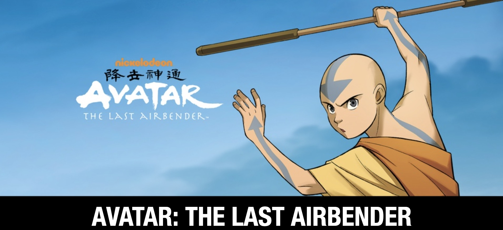

Avatar: The Last Airbender
This page is about the animated television series.
Avatar: The Last Airbender facts:
- It Set a Netflix Record
- Prince Zuko Wasn’t Supposed to Be a Major Character
- Toph Was Almost Male
- Lake Laogai is Based on a Real Chinese Labor Camp.
- Uncle Iroh Was Meant to Betray Zuko
And a few more:
- The Last Airbender was released in early 2005
- Avatar: The Last Airbender set a new standard for kid’s shows, and has been praised as one of the best kid’s cartoons
- Avatar: The Last Airbender was so popular that it even had multiple spin-offs, including a comic book series